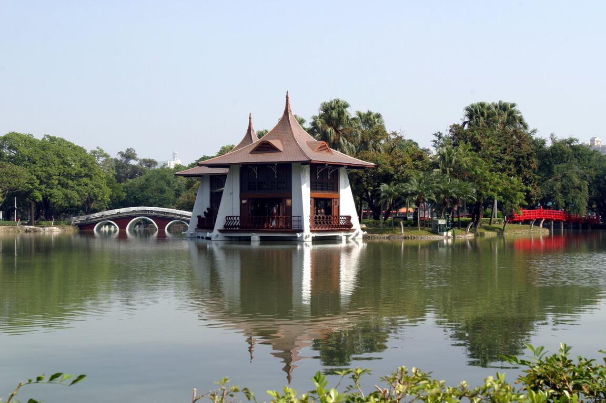

臺中公園旅遊導覽
一、臺中公園介紹
臺中公園是臺中市歷史悠久的都市公園， 位於臺中市北區，是許多市民休閒散步的重要場所。 公園內擁有湖泊、綠地、樹木與歷史建築， 結合自然景觀與人文特色， 成為臺中具有代表性的觀光景點之一。
臺中公園最著名的地標是湖心亭， 這座位於日月湖中的歷史建築， 以典雅的亭閣造型與湖面倒影聞名。 遊客可以沿著湖畔散步， 欣賞湖心亭與周圍的自然風景， 感受城市中難得的悠閒氣氛。
除了欣賞歷史建築，臺中公園也適合親子出遊、 攝影、散步及戶外休閒。 公園中的步道與綠地提供舒適的活動空間， 不論是臺中在地居民或外地旅客， 都能在這裡體驗臺中城市的歷史文化與自然之美。 如果想安排臺中一日遊， 臺中公園也是值得造訪的景點。
閱讀焦點：湖心亭與日月湖是認識臺中公園的經典起點。
二、臺中公園特色景點
臺中公園擁有豐富的自然景觀與歷史文化， 其中最具代表性的景點是湖心亭。 除此之外，公園內的湖泊、綠地及散步步道， 也非常適合遊客拍照與休閒。
推薦參觀景點
- 湖心亭：臺中公園最具代表性的歷史地標。
- 日月湖：欣賞湖面風景與自然景觀。
- 公園步道：適合散步、運動與休閒。
- 綠地廣場：適合親子活動與戶外休息。
三、臺中公園旅遊資訊
推薦遊玩順序
- 抵達臺中公園，先認識公園環境。
- 前往湖心亭，欣賞歷史建築與湖景。
- 沿著日月湖散步，拍攝自然風景。
- 在公園綠地休息，享受悠閒時光。
景點資訊整理
| 景點名稱 | 景點特色 | 推薦活動 |
|---|---|---|
| 湖心亭 | 歷史建築與湖景 | 拍照、欣賞建築 |
| 日月湖 | 湖泊與自然風景 | 散步、欣賞湖景 |
| 公園步道 | 綠樹與休閒空間 | 健走、運動 |
臺中公園 Google 地圖
景點地址： 臺中市北區雙十路一段65號
臺中公園位於臺中市區， 遊客可以利用 Google 地圖查詢交通路線。
地圖來源： Google 地圖（點我開啟導航）
四、臺中公園景點照片
臺中公園的湖心亭是具有代表性的歷史地標， 搭配湖泊與周圍綠意，形成優美的自然景觀。

五、臺中公園介紹影片
透過影片認識臺中公園的特色景點， 欣賞湖心亭與周圍的自然風景。
影片來源： YouTube（點我觀看完整影片）
六、參考資料
本網頁參考以下網站整理臺中公園的相關資訊。